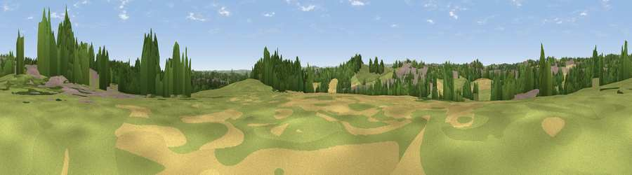

Brandy Carr Hill
#38978 in England · top 80% of its area beats it · near WrenthorpeThe view, rendered

A 360° render of this exact spot computed from the terrain model, tree cover and land cover — summer colours, afternoon light, calibrated against photographs of famous viewpoints. Real trees, hedges and buildings will differ in detail.
The panorama
Grey silhouette: terrain skyline in each direction (720 bearings, Earth curvature and refraction included). Dashed green: skyline with trees (+15 m) and buildings (+8 m) as obstacles. Blue strip: how far the ground is visible on each bearing.
Where the view opens
Wedge length = distance to the farthest visible ground on that bearing (vegetation-aware). Rings at 10, 25 and 50 km.
What fills the view
38% grassland · 23% woodland · 20% cropland · 19% built-up
Angular shares of the visible panorama (visual magnitude), not map area. Landscape diversity 0.59 (0–1 Shannon).
Key numbers
More beautiful places nearby
The staircase of upgrades: each row has a higher view potential than everything closer. Driving times are estimates from straight-line distance, calibrated against real road routing — check an actual route before setting out.
| Place | Direction | Drive | Score |
|---|---|---|---|
| Viewpoint near Wrenthorpe | SSW · 1 km | ~3 min | 46.7 |
| Viewpoint near Lofthouse Gate | NE · 3 km | ~7 min | 56.2 |
| Viewpoint near Woodkirk | WNW · 5 km | ~11 min | 62.1 |
| Viewpoint near Woolley | S · 11 km | ~20 min | 66.5 |
| Viewpoint near Grange Moor | SW · 11 km | ~21 min | 69.8 |
| Castle Hill | WSW · 18 km | ~31 min | 70.2 |
| Rawdon Billing | NNW · 19 km | ~32 min | 73.0 |
| Viewpoint near Jackson Bridge | SW · 21 km | ~35 min | 73.5 |
53.70583, -1.53795 · source: osm peak · position refined by local search. Computed location — check access rights before visiting.